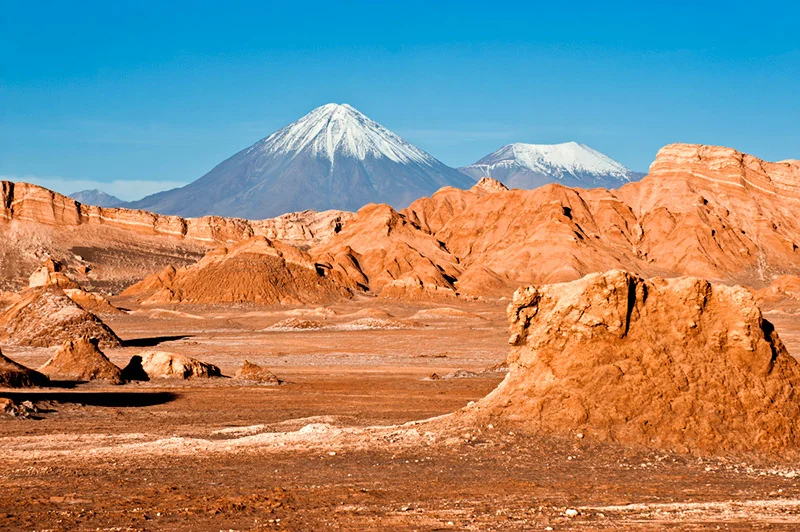
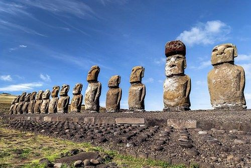
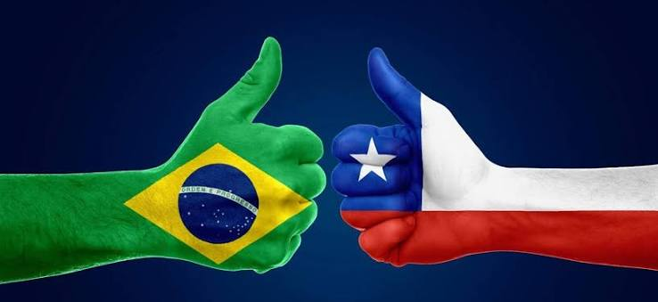

Uma jornada pelo Chile
Do deserto mais árido do mundo às imponentes geleiras da Patagônia, o Chile é um país de paisagens surpreendentes, contrastes naturais e belezas únicas. Estendendo-se ao longo da costa oeste da América do Sul, o país encanta por sua diversidade geográfica, reunindo desertos, vulcões, montanhas, lagos, florestas e regiões cobertas de gelo.
Além de suas maravilhas naturais, o Chile possui uma rica história e uma cultura marcada por tradições, festas populares, música, dança e costumes preservados ao longo das gerações. Sua gastronomia também merece destaque, com pratos típicos que revelam os sabores e as influências culturais do povo chileno.
De norte a sul, cada região oferece experiências diferentes, desde a imensidão do Deserto do Atacama até os cenários fascinantes da Patagônia. Entre cidades históricas, monumentos, sítios arqueológicos e os misteriosos Moais da Ilha de Páscoa, o Chile convida seus visitantes a descobrir um destino repleto de histórias, aventuras e encantos.
Explore nossas páginas e descubra a geografia, o clima, a cultura, a culinária e os monumentos que tornam esse país tão especial.

Destinos
Do Deserto do Atacama às geleiras da Patagônia: explore os cenários mais fascinantes.

Cultura
Viva as celebrações populares, a dança Cueca, o artesanato e a energia do povo.

Gastronomia
Delicie-se com empanadas, pastel de choclo e vinhos premiados mundialmente.

História
Descubra os enigmas dos Moais da Ilha de Páscoa e o legado dos Prêmios Nobel.

Dicas
Documentos necessários, melhor época do ano e dicas essenciais para planejar sua ida.